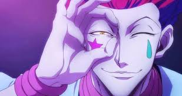
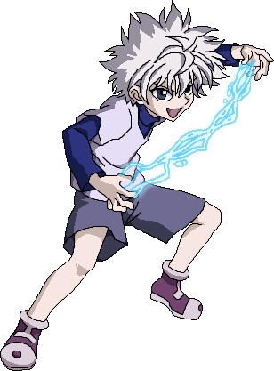
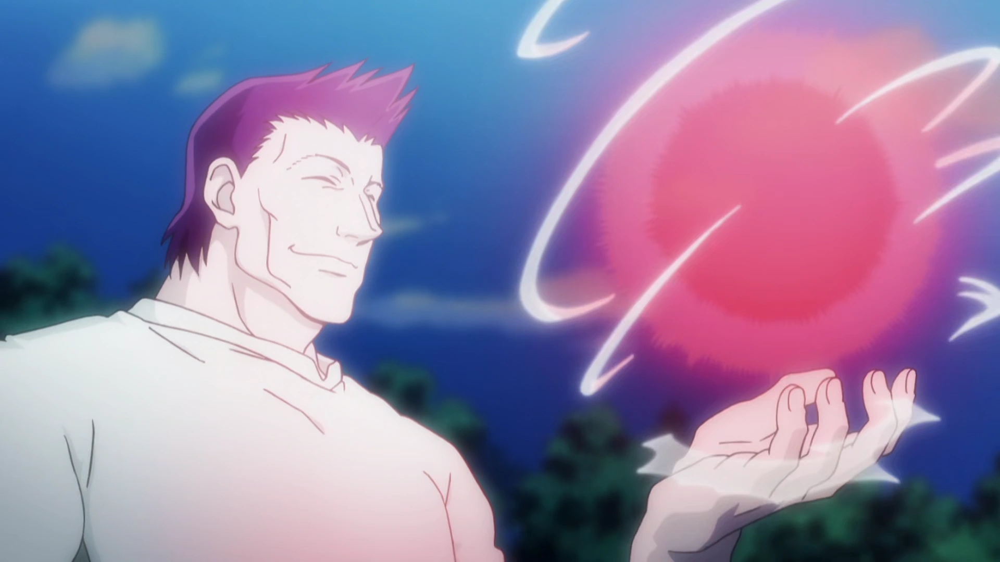
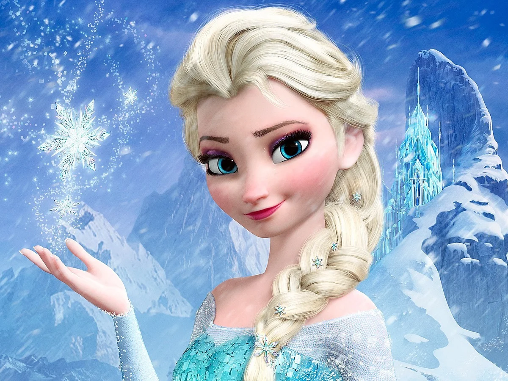

Hisoka
Hisoka has to be on the dodgeball team. He probability would be the best player between the handful. With his mobility, smarts, and great ability to be unpredictable, tha'’s what makes him elite. By possessing Bungee Gum, that gives Hisoka 100% control of the ball in every position he’s in. It being catching it, throwing it, or just trying to catch you off guard, no one sees it coming with him. Aside, from just talking about his nen abilities. Hisoka does best when the stakes are high and you never know what’s around the corner he stands in. Hisoka is very playful, but makes things out to a strategic goal, so you never know what his next move may be. That is why Hisoka would be poised to be the offensive and defensive wild card.
Killua
Killua’s speed, reflexes, and tactics makes him a strong asset in any fast-paced game like dodgeball. Killua’s reflexes in particular allow him to dodge any attack with great ease and strike when the timing is right. His godspeed ability would make him near impossible to hit and his quick wit would keep him in the loop of where his teammates and enemies were located. Killua is calm under pressure and his chemistry with Gon allows him to be the most consistent MVP.
Gon

Gon contributes brute strength, spirit, and determination that help turn the tide of any match. His fierce competitive spirit and unwillingness to give up no matter the odds fuel his all out plays. His throws are extremely powerful due to Nen and his creative improvisation allow him to be a formidable offensive player. Gons enthusiasm and commitment inspire everyone on his team to try harder, which makes him the heart of the team.
Razor
Razor is the undeniable team anchor. His control over the game and overall unmatched physical strength not only makes him a tactical leader but also a dominating player. He was the one who set up Greed Island's dodgeball challenge, so he knows everything about the rules as well as the physics of the ball's movement. His throws are enough to incapacitate opponents in one attack, and his leadership is enough to command the respect of the most powerful players. With Razor on the team, victory is all but assured.
Elsa
Elsa would create a unique and strategic contributor to the dodgeball team utilizing her ice powers and calm demeanor. She could use this defensive power to create a wall of ice to block incoming shots, or even freeze the ball in midair, stopping an opponents throw instantly. Her power allows her to control the temperature of her surroundings, which would allow her to slow down the opposition and give her teammates the upper hand. Outside of her powers, Elsa is calm and graceful under pressure and has a powerful sense of teamwork, making her the perfect counter to the intensity of the rest of the team.